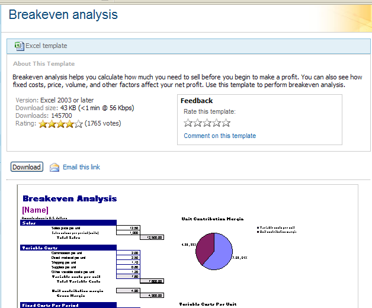
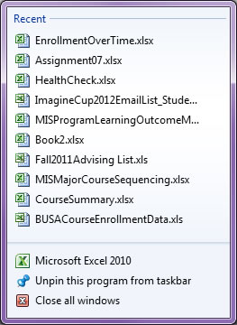
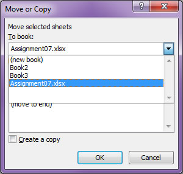
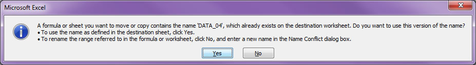

After completing this assignment you will be able to use a computer to
The exercises in this assignment should be done in the order presented.
The purpose of this assignment is to learn to use and develop an appreciation for the power of spreadsheet software. Yes spreadsheets can crunch numbers, but they can do so much more! Some possibilities are:
This assignment will cover a variety of ways to use a spreadsheet to illustrate the wide range of functionality available. You are encouraged to explore on your own to find additional features that will make your life and present or future jobs easier.
LinkedIn Learning Office 365: Excel Essential Training
You are strongly encouraged to review the entirety of this LinkedIn Learning video, which will take 2h 10m, but note that you can increase the playback speed. At a minimum you must work through Chapter 12, Inserting Subtotals in a Sorted List, here is a direct link. The required files for the tutorial are available for downloading from LinkedIn Learning.
(50) 1. To complete this exercise use Ex1_Subtotals.xlsx It is also available in the class storage 'ReadOnly' folder. Create the following subtotals for each Department: Years(sum), Compensation(sum), New Comp.(sum) Display the level 2 grouping.
Download the Excel 'BreakevenAnalysis.xlsx file from the hyperlink below, and save it to your ' ' folder.
 Make sure the workbook YourNameAssignment06.xlsx is open.
Hint: You must have only one (1) copy of Excel open.
This screen shot shows two separate instances of Excel. The Excel instance on the left has one workbook open. The Excel instance on the right has two workbooks open. You can only move and copy worksheets between workbooks in the same instance of Excel.
View and control instances of Excel through the taskbar. This shortcut menu appears after right clicking the Excel icon in the taskbar. Clicking "Microsoft Excel 2016" will open a new instance of Excel. 
To open workbooks in the same instance of Excel use the File>Open... or File>Recent... menu options.
To ascertain what workbooks are open in an instance of Excel, right click any worksheet tab and select 'Move or Copy...' and a dialog box appears. Click the arrow in the "To book:' list to see a listing of all the workbooks open in this instance of Excel: 
Be careful, these behaviors may change in future versions of Excel!
Make a copy of the two worksheets from the BreakevenAnalysis workbook and place them at the beginning of your "YourNameAssignment06" workbook. Hint: Search Excel Online Help for "Move or copy a worksheet"- Notice that you can also drag worksheets between workbooks.
Note: You will get several copies of the following informational message-click "Yes" until they have all cleared.  Make sure the Breakeven Analysis Data and Breakeven Analysis Chart are to the left of the 5-NamedRanges and other worksheets from the original Summative06.xlsx file.
Place a copy of the Ex1_Subtotals worksheet as the very first worksheet in your Excel workbook "YourNameAssignment06.xlsx" Your worksheet tabs will look something like this:
3. (50) In cell B2 of the 'Breakeven Analysis Data' worksheet enter your name. Add another Data Series to the chart. The name is 'Sales volume per period (units)' from cell B35 of the data sheet. The values are from cells D35:N35
5. (50) Learn the difference between stored numeric values and displayed (or formatted) numeric values. <-- Big hint here! Explain why the net profit (loss ) in cell K41 is not zero for this break even volume, when cell F33 (Breakeven_point) indicates a value of 700: Feel free to use the D2L discussion forum to exchange ideas.
6. (50) NAMED RANGES- Open the worksheet '6-NamedRanges' Create named ranges in cells B1 (indicating total sales) and B2(indicating total costs) Then create a formula in cell B3 using the total sales and total costs named ranges that subtracts the total costs from total sales to arrive at the profit. Copy and paste your formula (not the numeric answer) from cell B3 into the box below:
7.(50) VLOOKUP In cells D10:D14 of worksheet 7-Vlookup you are given numbers indicating the quantity of ads purchased. Using that information, and the tiered pricing for ads given, create formulas based on the Vlookup() function in cells E10:E14 that calculates the cost to purchase the quantity of ads indicated. You will not receive credit unless you use the Vlookup( ) function.
8. (50) Financial Functions-> PMT-LOAN REPAYMENT Refer to worksheet 8-PMT Using the Pmt( ) function create and enter a formula in cell B5 that determines the MONTHLY payment of the loan, based on the information given. Assume a future value of zero, and that the payments are made at the end of the period.
9. (50) Why does the answer to question 8 in cell B5 appear in red, enclosed in parentheses?
Working with Strings
In the worksheet 10-StringParsing you are given data that contains year, quarter and GNP. This data is all contained in the first column. Create formulas using string functions (referred to in Excel as TEXT functions) to isolate the year, quarter and GNP value into columns B, C and D. Specifically, enter these formulas into cells B6:D23
10. (50) Formula to parse 'year':
11. (50) Formula to parse 'quarter':
12. (50) Formula to parse 'GNP':
In worksheet 13-Charts you are given Price and Quantity data. Create an X-Y scatter chart on the same worksheet. Add a Linear Trendline to the chart, make sure to "Display the Equation on Chart" and "Display R-squared value on Chart"
13. (50) Is the Price sensitive to the Quantity sold?
(100) 15. Upload your file 'YourNameSummative06.xlsx' to the D2L 'Summative06_XLSX' Assignment folder.
Use a web browser to verify that you have published your website to https://classes.winona.edu/... Check that your name, StarID, email, class, semester, section and all of your answers are correct and visible. From the menu choose File>Print... and using "Microsoft Print to PDF" save a copy of this assignment as a .pdf file in your ' ' folder.
(50) 16. Save your file 'WebPage.pdf' to the ' ' folder.
Create a .pdf file named 'screenshots.pdf' by combining the above screenshots.
Refer to Formative00 and either: Method 1- use File Explorer to drag all screenshots into a blank Word document, and print the document as 'screenshots.pdf' or Method 2- use File Explorer to select all screenshots, righ click and select 'Print' and print the document as 'screenshots.pdf'
(50) 17. Save your file 'ScreenShots.pdf' to the ' ' folder.
Use PDFill to merge the WebPage.pdf file with the ScreenShots.pdf file, and save it as 'Summative06.pdf' in ' ' folder.
(50) 18. Upload your file 'Summative06.pdf' to the D2L 'Summative06_PDF' Assignment folder.
Use a browser to view your completed and published website at: https://classes.winona.edu/... Ensure that you have linked this assignment on your home page. Note that your screen shots do not have to be completed to perform this step.